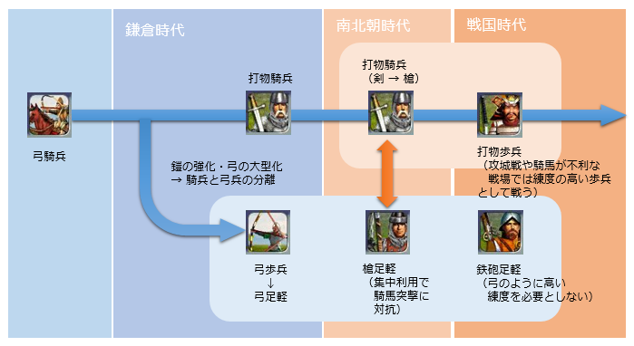

『戦国の軍隊―現代軍事学から見た戦国大名の軍勢』
公開日：

- 作者: 西股総生
- 出版社/メーカー: 学研パブリッシング
- 発売日: 2012/03/01
- メディア: 単行本
- 購入: 1人 クリック: 28回
- この商品を含むブログ (7件) を見る
- 第1章 戦いの現場から――天正十八年の山中城攻防戦
- 箱根路の戦雲
- 渡辺勘兵衛の活躍
- 山中城落城
- 第2章 中世の軍隊――封建制軍事力編成の原理
- 武士とは何者か
- 封建制的軍隊の成立
- 元寇から南北朝・室町時代へ
- 第3章 戦国の兵士は農兵か――軍団の編成と戦争の季節――
- 後北条軍団を解剖する
- 後北条軍団の解剖
- 戦争と季節
- 第4章 足軽と長柄――軽装歩兵の戦列化――
- 兵種別編成方式と領主別編成方式
- 足軽とは何者か
- 戦争を変えた長柄鑓
- 第5章 鉄炮がもたらした確信――集団戦から組織戦へ――
- 鉄炮と戦国の軍隊
- 軍事上の画期
- 第6章 侍と雑兵――格差社会の兵士たち――
- 侍と軍役
- 侍たちの戦場
- 戦国時代の非正規雇用兵
- 二重構造の軍隊
- 第七章 補給と略奪
- 戦国時代の兵站
- 小田原の役と補給
- 飢餓と略奪
- 天下統一の光と影――信長・秀吉軍はなぜ強かったのか
- 兵農分離と民兵動員
- 鉄炮神話の再検証
- 覇者の素顔
- 戦国軍事革命の結末
本書は、みんな大好き・渡辺官兵衛了の活躍で幕を開ける。なぜ勘兵衛はこうもクレイジーな単騎突撃を行ったのだろう？ 当然いたはずの郎党衆の描写がほとんどないのはなぜだろう？ という違和感。そこから謎が解かれていくというスタイルは、なかなか印象深かった。「戦国時代の軍隊ってみんなが今までイメージしてたのとちょっと違うのではないか」と問いかける“城郭研究者”（！？）渾身の一冊。
歩兵戦術の大改革
その前に、日本の歩兵戦術について復習しておく。
『兵器と戦術の日本史』でも触れていたけれど、日本の武士は当初、オリエントと同じような弓騎兵（間接攻撃騎兵）だった。とくに中東では、おそらく暑さゆえに重装騎兵・歩兵が発達しなかったので、打撃力は弓矢で十分。となれば、弓騎兵が進化的に安定な戦略であろうと思う。
しかし、日本では鎧の発達につれ弓は大型化し、弓は徒歩で、騎馬は肉薄攻撃に使われるようになっていく（騎兵と弓兵の分離）。そして、いわゆる源平合戦の頃から決勝戦力として、とくに東国で突撃騎兵（本書では打物騎兵にあたるかな。武器として刀、のちに槍を携えた直接攻撃騎兵）が台頭してくる。平家の弓騎兵と源氏の突撃騎兵の対決は源氏に軍配が上がる。
となれば、西洋でそうであったように、当然、この突撃騎兵戦法に対するアンチ戦略（長柄による集団歩兵戦法）が日本でも編み出されるはずだった。しかし、鎌倉幕府による封建体制が固まるとそうした機運の目は摘み取られてしまう。元寇でモンゴルの矛歩兵の集団戦法（＋火力攪乱）に遭うも、日本における歩兵戦術の改革は南北朝時代以降に持ち越されることとなった*1。
そうして戦国時代にかけてようやく登場したのが、僕らが“足軽”と言われてよく想像する長柄歩兵（槍足軽）だ。それまでも弓足軽とも呼ぶべき補助戦力は用いられていたようだが、足軽が戦場の主役を担うようになるのは長柄を手にしてからと言えるだろう。そして鉄砲が伝来すると、鉄砲足軽が戦場を席巻することになる。

（図が悪いけど、各兵種は進化・置き換えられたのではなく、併存していた）
しかし、鎌倉時代までは領主がそれぞれ手勢を率いて参加する領主別編成方式が主流だったはずだ。この領主別編成方式では、指揮官たる領主の下にさまざまな武器を持った郎党たちが加わる。当然、弓兵のみを集中運用したり、槍歩兵を効率よく運用したり、大部隊の鉄砲隊を編成するのは不可能だ。こうした兵種別編成方式はいつから・どのように行われていたのだろうか。
それが語られるのが第2章以降で、後北条軍団を例に分析すると相当早くから行われていたらしい。結論だけ抜き出すと、戦国時代における領主の役割は大きく二つに分かれていた。
領主たちが果たすべき軍役は、所定の兵士を調達して戦場へ連れてゆくことと、自らが侍として主君のために戦うこと、の二本立てでだった
第1章に出てくる渡辺官兵衛了の活躍に対する違和感は、ここれ氷解する。勘兵衛は連れてきたであろう郎党を領主に差し出し、自分は（ほぼ）単騎で戦っていたのだ（ナルホド
加えて戦国時代には、現代で言えば派遣社員・アルバイト・パートタイマーにあたる兵たち（足軽、雑兵）が多くいた。彼らは農家の次男・三男坊だったり、戦争で食い扶持を失った人たちであったりする。かれらが正社員たる領主とその郎党とは違うルートで、大量の兵を供給していた（それらを統括していたのが足軽大将）。
（足軽とは）非侍身分の軽装歩兵を主体とした用兵的性格を強くもつ集団（※軽装とはいえ、古代の重装歩兵ぐらいはある）
とくに信長・秀吉は彼らを長柄足軽・鉄砲足軽として大量かつ有効に活用した。彼らは年がら年中戦争をしていた（事業規模を急速に拡大中のチェーン店のようだ！）ので、多数の派遣・パートを抱えることができた。これが“結果的に”練度の高い常備軍となる。また、他の勢力と違って既成の領主層が薄く、常に人材不足の状態にあったので、才能さえあれば縁故がなくても登用されることが多かった（光秀の登用と反乱、秀吉の下剋上）。
これは、良質な領主層に恵まれた武田・徳川などが少数精鋭の騎兵・歩兵混合部隊（『兵器と戦術の日本史』の用語でいえば騎歩チーム）で戦ったのとは対照的だ。とはいえ、これらの勢力が派遣社員・アルバイトを利用しなかったわけではけっしてない。実際、本書では武田・北条が織田・豊臣に比べて鉄砲（足軽）の導入が遅れていたわけではないことを明らかにしている（ただし、導入のインセンティブとしては織豊のほうに強いものがあったのではないだろうか）。
また、派遣社員・アルバイトの存在は“農繁期”の戦争をも可能にしただろう。僕らは「昔は兵農一致だったので、農繁期に兵を休める必要があった。戦国時代では兵農分離を行った勢力が強くなった」というイメージを持っているけれど、兵農分離は意識的・能動的に行われたものではないかもしれない。
――とまぁ、こんな感じで。
15世紀の後半から16世紀の前半にかけて領主別編成方式から兵種別編成方式への移行が行われた結果、これまで縦割りだった軍事が横割りになり、軍事は戦略・戦術・戦技へと分化・階層化・明確化・深化していった。欧州ではその延長として、絶対王政と（そのアンチテーゼとしての）市民革命による封建制の解体が行われ、産業革命を経て近代民主主義＋資本主義が誕生する。
しかし、日本ではそうならなかった。鎌倉幕府の成立が時を止め、歩兵戦術の発展を阻害したように、江戸幕府の誕生は封建社会の崩壊を止めた（そればかりか、時間を巻き戻しさえした）。そのため、日本で起こった“軍事革命”は“社会革命”に発展することなく終わってしまった（『贈与の歴史学 儀礼と経済のあいだ』 - だるろぐ でもそうだったのだけど、日本には近代へ離陸するチャンスが何回か会ったはずなのに、ピースがそろわずに不発っていうパターンが……）。とはいえ、何百年もの平和との引き換えだから、決して悪くないのかもしれないけど。
おまけ①
弓と鉄砲の比較。鉄砲の一番の利点は「素人でもちょっと訓練すれば扱える」ことのようだ。
| 弓 | 鉄砲 | |
| 構造物破壊力 | × | ○ |
| 戦闘力の属人性 | × | ○ |
| 次弾装填 | ○ | × |
| 隠密性・静粛性 | ○ | × |
| 制圧力 | ○ | △ |
| 応用性（矢文や火矢） | ○ | × |
でも、少し疑問に感じたのだけど、鉄砲足軽を集めて鉄砲を給付していたとしたら、パクられたなんていうトラブルが当然発生したように思うんだけど、そこらへんはどうだったんだろう。ある程度は督戦管理するとしても、敗戦ともなれば混乱は避けられそうにない。もっとも、捨てて逃げるのかもしれないけど。
おまけ②
兵站の話も面白かった。当時の兵站は現地調達（＋商人資本に頼る）が基本で、飢えと隣り合わせだった。万全の準備をしたであろう秀吉の小田原戦役ですら飢えが発生していたとみられ、裏では口減らしのための支城攻略なども行われている。自分は未読だけど（映画は見た）『のぼうの城』なんかもその一幕って感じなんやね。

- 作者: 和田竜
- 出版社/メーカー: 小学館
- 発売日: 2007/11/28
- メディア: 単行本
- 購入: 14人 クリック: 186回
- この商品を含むブログ (371件) を見る
*1:南北朝時代には城塞を活用したゲリラ戦法が発達し、騎射および騎兵の重要性はさらに下がった